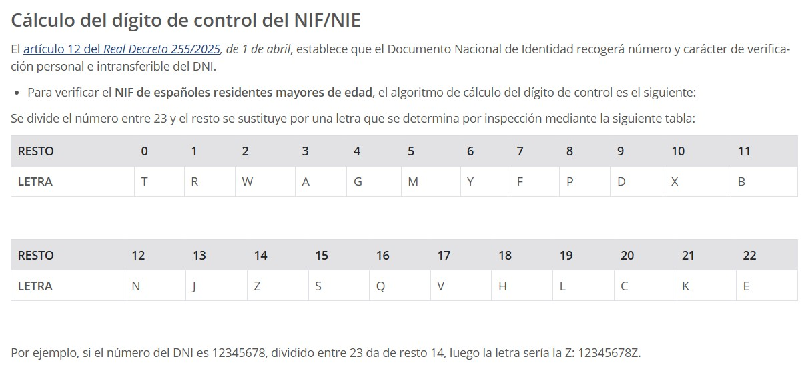

Tema 3 — Tipos de datos y estructuras de datos en Python (Hoja de ejercicios)#
Objetivos de aprendizaje
Familiarizarse con el concepto de clase y objeto (solo para su uso, no su definición).
Acceder a atributos y métodos de un objeto.
Utilizar estructuras de datos básicas en Python:
list,tuple,dict,range,set.Trabajar con cadenas de caracteres y sus métodos.
Requisitos previos
Python 3.10+ instalado.
VSCode con extensión de Python.
Conocimientos básicos de estructuras iterables y funciones integradas (
len,in,range, etc.).
Contenidos del tema
Listas y tuplas (
list,tuple)Diccionarios (
dict)Conjuntos (
set)Rangos (
range)Cadenas (
str) y sus métodos (split,replace,count, etc.)
1. Letra del NIF usando listas y diccionarios#
Enunciado.
La letra del NIF es un carácter de verificación que se añade al número del DNI. Se calcula a partir del resto de la división del número del DNI entre 23 y una tabla de correspondencia entre letras y restos.
{kind=link}

Fig. 8 Tabla para el cálculo de la letra del NIF. Fuente: Ministerio del Interior.#
Implementa un programa que pida el número al usuario y muestre el DNI completo (número + letra) utilizando listas. Recorre una cadena de caracteres y añade cada carácter a una lista.
Implementa el mismo programa usando un diccionario, donde las claves sean los restos y los valores las letras correspondientes.
Recordatorio
Usa el operador módulo
%para obtener el resto.Ejemplo de lista:
letras = ['T', 'R', 'W', 'A', ...]Ejemplo de diccionario:
letras = {0:'T', 1:'R', 2:'W', ...}Una string es iterable, puedes recorrerla con un bucle
for, por lo que podría definir una string con los dígitos y recorrerla para crear la lista.Convierte el número a cadena si necesitas recorrer sus dígitos.
2. Operaciones básicas con listas#
Enunciado.
Escribe un programa que pida al usuario 10 números por consola (incluyendo los valores 1, 9 y 11 para las pruebas) y los almacene en una lista.
Posteriormente:
Muestra la lista ordenada (
lista.sort()).Muestra cuántas veces aparece el número 1 (
lista.count(1)).Indica si el número 11 está o no en la lista (
in).Muestra la posición del número 9 (
lista.index(9)).
Recordatorio
Valida que el usuario introduzca números enteros (
int(input(...))).Usa
print(lista)para mostrar el contenido completo.El método
sort()ordena la lista en su lugar.
3. Lista de números primos hasta un límite#
Enunciado.
Escribe un programa que almacene en una lista los números primos hasta un número dado por el usuario.
Usa range() para generar el rango hasta ese número y comprueba la primalidad de cada elemento.
El programa deberá mostrar la longitud de la lista (len(lista)).
Puedes hacerlo de dos formas:
Con puro Python, implementando tu propia función
es_primo(n).O usando la función
isprimedel módulosympy(debes instalarlo primero conpip install sympy).
Recordatorio
Documentación de
sympy.isprime:
https://docs.sympy.org/latest/modules/ntheory.html#sympy.ntheory.primetest.isprime
4. Análisis de texto#
Enunciado.
Pide un texto por teclado y muestra:
Cuántas palabras tiene (
splitpara separar por espacios).Cuántos espacios contiene (
count(" ")).Cuántas letras tiene (excluyendo los espacios).
El texto con todas las ocurrencias de
"de"reemplazadas por"xx"(replace("de", "xx")).
Recordatorio
Puedes usar
len(cadena)para contar caracteres.Usa
cadena.replace()para obtener una nueva cadena modificada.split()sin argumentos separa por cualquier espacio en blanco.
5. Comparación de palabras entre dos textos#
Enunciado.
Pide dos textos por teclado. El programa debe indicar:
Cuántas palabras tienen en común ambos textos.
Las palabras únicas de cada texto.
Convierte cada lista de palabras a un conjunto (set) y utiliza las operaciones de conjuntos:
union,intersection,difference.
Recordatorio
set(palabras)elimina duplicados automáticamente.Usa
texto.split()para dividir ytexto.lower()para evitar problemas de mayúsculas.Ejemplo:
comun = set1 & set2 unicas1 = set1 - set2
6. Densidad de los planetas del sistema solar#
Enunciado.
Crea un diccionario donde las claves sean los nombres de los planetas y los valores sean tuplas (volumen, masa).
Calcula y muestra para cada planeta su densidad relativa (masa / volumen).
Recorre las claves del diccionario (diccionario_planetas.keys()) y accede a los valores correspondientes.
Puedes basarte en la siguiente fuente de referencia:
Cuerpo celeste |
Diámetro (Tierra=1) |
Volumen (Tierras) |
Masa (Tierras) |
Densidad (Terrestre=1) |
Radio orbital (UA) |
Periodo orbital (años) |
Periodo de rotación (días) |
|---|---|---|---|---|---|---|---|
Sol |
109 |
1,294,037.4 |
332,950 |
0.257 |
0 |
0 |
25–35 |
Mercurio |
0.382 |
0.056 |
0.06 |
1.071 |
0.38 |
0.241 |
58.6 |
Venus |
0.949 |
0.854 |
0.82 |
0.943 |
0.72 |
0.615 |
-243 |
Tierra |
1.00 |
1.00 |
1.00 |
1.00 |
1.00 |
1.00 |
1.00 |
Marte |
0.53 |
0.149 |
0.11 |
0.738 |
1.52 |
1.88 |
1.03 |
Júpiter |
11.2 |
1,403.85 |
318 |
0.227 |
5.20 |
11.86 |
0.414 |
Saturno |
9.41 |
832.6 |
95 |
0.141 |
9.49 |
29.46 |
0.426 |
Urano |
3.98 |
62.997 |
14.6 |
0.224 |
19.24 |
84.01 |
0.718 |
Neptuno |
3.81 |
55.264 |
17.2 |
0.311 |
30.06 |
164.79 |
0.671 |
Plutón |
0.186 |
0.003 |
0.0021 |
0.7 |
29.67–48.83 |
248.53 |
6.375 |
Magnitud |
Valor |
|---|---|
Diámetro ecuatorial |
12,756.2 km |
Volumen |
1.08321×10^12 km³ |
Masa |
5.9736×10^24 kg |
Densidad |
5.515 g/cm³ |
Radio orbital medio |
149.59×10^6 km (1 UA) |
Periodo orbital |
1 año |
Periodo de rotación |
1 día |
Fuente: https://saberesyciencias.com.mx/2017/10/09/tamanos-distancias-sistema-solar-respecto-planeta/
Recordatorio
Las tuplas son inmutables, pero puedes acceder con índices:
tupla[0],tupla[1].Recorre el diccionario con
for planeta, datos in diccionario.items():.Calcula la densidad con
masa / volumen.
(Adicional) Sucesiones y límites (Análisis Matemático I)#
Enunciado.
Considera la sucesión definida por:
\(a_0 = \sqrt{a}\)
\(a_n = \sqrt{a + a_{n-1}}\)
para \(n \ge 1\), con \(a > 0\).
Implementa un programa en Python que:
Pida al usuario un valor de (a) y valide que sea positivo (vuelve a solicitarlo mientras no lo sea).
Pida un error máximo permitido y úsalo como criterio de parada.
Calcule y almacene en una lista los términos de la sucesión hasta que \(|a_n - a_{n-1}| < \text{error}\).
Muestre cuántos términos se han calculado y el valor del último término obtenido.
Calcule el límite teórico:
\[ l_1 = \tfrac{1}{2}\left(1 + \sqrt{1 + 4a}\right) \]y muestre la diferencia con el último término de la lista.
Ejemplo de ejecución:
Introduce a (>0): 2
Introduce el error máximo permitido (>0): 1e-6
Se han calculado 12 términos (incluyendo a0).
Último término a_11 = 1.999999852931
Límite teórico l1 = 2.000000000000
Diferencia |a_n - l1| = 1.470685642e-07
Error interno |a_n - a_(n-1)| = 4.412056713e-07
Recordatorio
Usa
math.sqrtpara las raíces yabspara la diferencia absoluta.Inicializa la lista con
a0 = math.sqrt(a)antes del bucle.Valida que los valores introducidos por el usuario sean positivos.
Conviene controlar casos extremos (errores muy pequeños, máximos de iteraciones) para evitar bucles infinitos.